Porting STARS to JavaScript
How STARSv2.EXE (Noooon, 1995) was unpacked, understood and re-written, and how each effect works.
Part 1: Making of
The executable
STARSv2.EXE is 1.24 MB: a tiny DOS stub, a 76 KB packed “MZ image”, then an overlay holding 58 resources (the table of contents sits in the last 696 bytes). The packing is two layers deep.
- Anti-debug decryptor. The entry point reads the interrupt-controller mask (port 21h) and jumps into the middle of an instruction. A word-by-word decrypt loop runs first, then a second stage that hooks INT 1 and INT 3 and executes one operation per trap, swapping vectors on the fly. Tracing it by hand is miserable, so we emulated it: a Unicorn 16-bit harness with a hand-made interrupt table finished in about 540k instructions.
- PKLITE-style LZ. The result is a classic LZ decompressor (“Not enough memory$”), about 1.7M emulated instructions, which expands to ~600 KB and relocates itself.
- PMODE v3.07 by Tran. What is left is a real-mode loader that detects RAW/XMS/VCPI/DPMI, enables A20 and switches to 32-bit protected mode. We dumped the flat 32-bit image (
image32.bin) where file offset equals address. The demo itself is one big 386 assembly program with the LCA player (v3.02, GUS + Sound Blaster) linked in.
Resources
The program opens itself and reads 12-byte table entries (id, offset from EOF, size). Many resources are compressed with a format whose header carries the magic dlz at bytes 6-8, preceded by a decoy mov ah,4Ch / int 21h. It is a PKLITE-like decoder with 16-bit LSB-first flag words; we rewrote it in Python (re/dlz.py) and extracted all 58 resources.
- 768 bytes: a 6-bit VGA palette. 64768 bytes: palette + 320×200 chunky picture (title and credits screens). Raw 64000 or 65536 bytes: textures, maps and backgrounds without palette.
- Blobs starting with
42 21 1a 0f(“B!”) are not images: they are 3D objects (vertices, faces, optional morph key frames). - Resource 1 (780 KB) is a ProTracker-like MOD with 16 channels and a 256-entry order table (155 used). Standard players read 128 orders only, so
mod2xm.pyconverts it to an XM, orders kept 1:1 and Amiga-style left/right panning injected as 8xx effects. The demo script synchronises on(order<<8)|row, and so does the JS port, reading the position from libopenmpt (chiptune3).
Ground truth: the Unicorn harness
Instead of only reading disassembly, we run the original code in a Unicorn emulator (flat 32-bit model, a GDT with dynamic selectors, DPMI / disk / sound / PIT / VGA ports stubbed, a fake 70 Hz timer IRQ and a simulated music position). A snapshot after the 100-second global initialisation lets each part start in seconds. The harness dumps VRAM and palette as PNG frames. Each JS part is rendered headlessly in Node (web/tools/render.mjs) and compared pixel by pixel to the harness frames at many frame indices. Where the original uses random numbers, the RNG (s^=0x78d47e5d; s*=0xd413d473; rol 18) is reproduced, and the check is on shape rather than dots.
The 3D engine (lib3d.js) is a port of the shared library at 0x78000 plus its polygon rasterizers: fixed-point matrices (.10), projection, object sort, and about 20 shading modes (flat env lookup, texture, bump, warp…). Rasterizers are tested by calling the original function in Unicorn and the JS one on random triangles and hashing the 64000-byte result (400/400 identical for most modes).
Work split
One agent per effect, each given the same brief: where the code is, how to run the harness, the conventions of the original (segment tricks, fixed-point formats, timing), and three deliverables: a faithful web/parts/<name>.js, a short note in re/parts/<name>.md, and a verification against harness frames. A main agent owned the shared engine, the music, the timeline (script.js) and the integration. Because every part is verified independently against the original, a wrong guess shows up as a pixel diff rather than as an impression that something looks off.
What is approximate or unverified
- Part B (the notes call it “partb-I”): the second half is unverified against the original.
- Part F: only the first ~700 ticks compared; later bounces, fly-by and ending transcribed from disassembly.
- Most 3D parts: harness tick jitter limits long exact runs; they match at sampled frames and look identical otherwise.
- The text-mode ending of the original (a final screen at position 0x7dd) is not ported.
- Timing assumes one timer tick per frame (70 Hz); the original may run slower on a slow machine with a Sound Blaster, as its own NFO warns.
- Random dots in the text parts: the RNG seed depends on how many numbers earlier parts consumed, so the exact dot pattern differs.
- One warp rasterizer mode (
V_WARP256) mismatches 2/400 random triangles when they extend below the 200-row screen; it is offscreen in practice. - Sound: GUS / SB output of the original player is replaced by libopenmpt; mixing, interpolation and effects handling differ slightly from the LCA player.
Part 2: The effects, in demo order
All effects run at 70 Hz in mode 13h (320×200, 256 colours). The main program is a linear script: init, loop, cleanup, wait for a music position. Screenshots are 320×200 frames from the JS port.
1. Intro (title pictures and flower screens)
A scripted slideshow synchronised to the music position (order<<8 | row). Pictures are a 768-byte 6-bit palette plus 64000 pixels. They are never redrawn: the bitmap goes into VRAM with a black palette and the fade is done by scaling the palette every vsync (pal*level>>8, clamped), 129 frames in, hold, out. The four “flower screens” (one per member) composite a name sprite, a word sprite and a rotating 256×256 texture with colour 0 transparent.
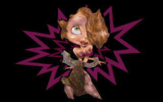
2. E1: Tunnel
Precomputed lookup table: for every screen pixel a 16-bit value built by walking concentric ellipses (radius 0x1400/(m+19) gives the depth) with a sine table, first writer wins. Each frame two 256×256 textures (the second one reduced to 16 levels) are sampled at that table plus four scrolling offsets, summed to make the flowing tunnel. Scroll speed decelerates to zero around frame 0x124-0x208. 521 frames, palette fades in during the first 64.
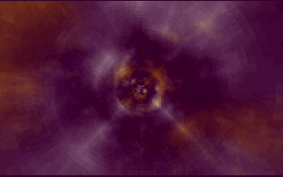
3. E2: Wasp (environment-mapped morphing 3D scene)
Our 3D library (see below), 68 flat-shaded objects (the wasp parts) drawn with a spherical “env map” lookup (colour = a 256×256 image indexed by the face normal), over a still picture. Seven objects interpolate between 4 key poses, the camera interpolates through 9 key positions with a small sine wobble. A sprite blinks in the corner during a part of the path. 911 frames, starts from a white flash.
Triangles: the 68 meshes hold 3012 vertices and 5595 triangles in total (18-180 vertices and 24-336 triangles each; static counts, before any culling). Measured in the JS port: on average 42.6 of the 68 objects survive the bounding-sphere test per frame, which means about 2040 vertices transformed and 3791 triangles submitted, of which about 1480 (277 to 2217) pass the backface/depth test and are rasterized. See 3D scenes by the numbers.
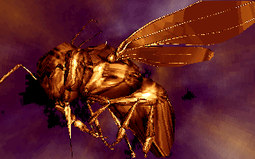
4. Part B: Spiky ball (over a bump-mapped tunnel)
A 685-vertex, 1366-face object drawn in shading mode 15 (texture + bump map + environment lighting), while the light angle moves each tick and the object flies on a parametric path over a pre-rendered tunnel background. Phases (hold, fly, fast spin) change at fixed tick counts; 2346 frames in all, then a fade-out.
Triangles: one mesh, 685 vertices and 1366 triangles (static). About 568 triangles per frame survive backface culling (measured: min 468, max 690), so roughly 42% of the mesh is drawn.
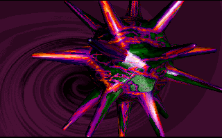
5. Part C: Warp (warped picture show)
Three pictures are stretched into 256×256 buffers. A ring of four curves (top, bottom, left, right edges) is computed from sine tables with per-stage amplitude and phase; it defines a warped quad. For every column the texture start and per-row step are derived, so each pixel is a texture lookup with 32-bit packed 8.8 coordinates. Stages change the ring radius, speeds and flip pictures every 66 frames; later stages tile and squeeze the picture into many small copies.
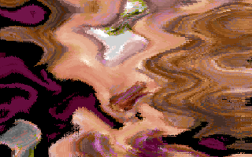
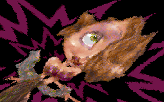
6. Voxel terrain + polar warp
A height map and a colour map (256×256) are rendered by a classic voxel ray caster: 256 vertical rays, 105 steps each, projecting height through a lookup table (LUT[j][h]=190-min(189,(0x2f4+14h)/(j+9))) into a 256×256 buffer. That buffer is then displayed through a polar map (angle/radius for each screen pixel, built by stepping from the centre for 4096 angles), so the landscape wraps around the screen centre like a planet. The camera drifts and the ray tables are wobbled with a sine each frame.
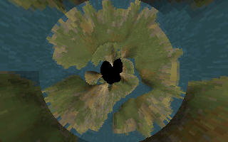
7. Part D: Morphing head (animated bump texture)
A 529-vertex face object with 10 key frames morphs between them (weights from a table, 63 steps, 34 key indices), seen with environment shading. The texture is a 64×128 tile cross-faded between two resources in 8 frames and repeated across the 256×256 texture buffer, while the palette itself cross-fades between two ramps. The object moves along six path keys.
Triangles: 529 vertices and 968 triangles in the base pose (plus 10 key frames of 529 vertices each, which add no triangles). About 898 triangles per frame are rasterized (measured: 712 to 968) (most faces pass the test; I did not investigate why so few are culled, the port matches the original pixel for pixel).
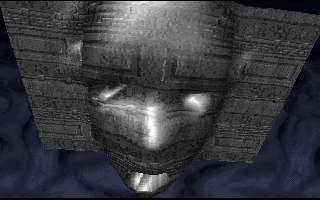
8. Picture
A still picture (palette + 64000 pixels) faded in and out with the same palette-scaling routine as the intro (65 frames each way), used between the head and the bouncing ball.
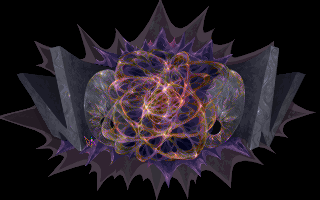
9. Part F: Morphing env (bouncing morphing ball)
Sphere sprites on a ring were precomputed at start-up: 64 frames of 16 spheres rendered with the 3D library, rows 77-199 stored as run-length encoded streams (about 1.2 MB). The foreground is a 650-vertex morphing object using a different env map. A ball falls in, bounces 7 times at shrinking intervals and each bounce triggers a 63-tick colour flash; the ring plays frames (t>>1)&63 underneath. 1805 frames.
Triangles: the ball has 650 vertices and 1296 triangles (3 extra key frames); about 531 are rasterized per frame on average (0 before it falls into view, at most 785). The start-up precalculation draws 1024 spheres of 158 vertices and 316 triangles each (323,584 submitted, 92,634 rasterized, measured), once, not per frame.
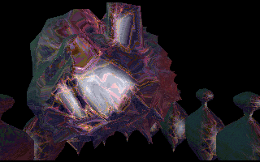
10. Part G: Zoom blur (feedback-blur text)
Two 320×200 byte buffers with values 0..31 that are zoom-blurred every frame: each output pixel is the average of its four neighbours, sampled with a 120/128 zoom around the centre. Random dots and sprites (the text bitmaps from one resource, flashed after each music row) are stamped into the feedback source, so they smear out into glowing trails. The palette is a 32-colour blue ramp (violet in the second variant, section 13). The inner loop is machine code generated at run time; we do the same arithmetic with exact per-byte carries.
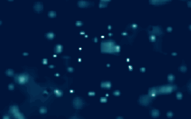
11. Part H: Checkered zoom (three-layer feedback blur)
Three 320×200 layers are blurred and zoomed (factor 0x77/0x80, plus a small sine wave offset) every frame; stamp streams (skip/count run lists from three resources) paint the girl into the layers on selected music rows. Output is a checkerboard that alternates each frame: a lookup table lut[L0,L2] mixes two layers into a colour, the third is shown through a green/magenta ramp. 444 frames.
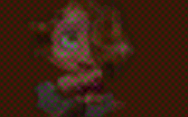
12. Part I: Torus mirror (stone torso and mirror)
Two morph objects: a statue torso in shading mode 2 whose environment map is a render target, and a spinning ribbon in mode 20/21 (warped texture mapping). A mirror image of the ribbon is drawn first into a 256×256 target which then serves as the environment map of the statue, giving real-time reflections. Wave functions on a subset of vertices move the ribbon; scripted by tick count (rises, spins, then two orbit phases). 2447 frames.
Triangles: torso 192 vertices / 384 triangles, ribbon 242 vertices / 459 triangles (329 of type “warp”, 130 of type “2-attribute”, per the notes). Measured average: about 484 triangles per frame (188 to 653) over 2.4 object draws per frame: the ribbon is drawn 1.7 times per frame on average (once, plus the mirror pass once the torso is shown), the torso 0.7 times.
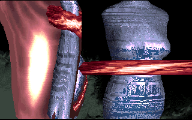
13. Part G: Zoom blur 2 (second variant)
The same code as section 10 with a violet/pink palette, a different sprite table (17 steps) and four orbiting squares from sine tables of different frequency.
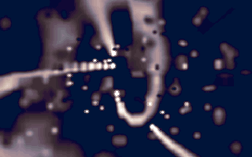
14. Part J: Feedback (head over a feedback tunnel)
The metallic head is a pre-shaded stream: a 256×256 environment map is read at an offset that scrolls with a sine, and the pixel stream (skip/count runs) selects which pixels belong to the head. Behind it, the previous frame is remapped through a 32-row palette-lookup table (to darken) and warped: pix(y,x)=A[R[y]+D[x]] with R and D sums of two sines scaled by an animator P; with P around 256 nothing moves, when P sweeps the picture folds into a tunnel. A strobe at the end accelerates until the head flickers every frame.
Triangles: none; this head is not a mesh, it is a pre-shaded pixel stream (no 3D library call).
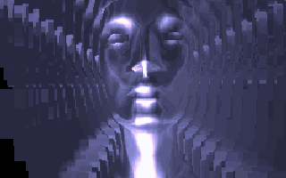
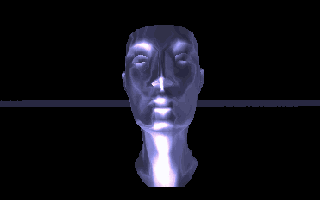
15. Credits
Series of full-screen pictures (member names, music, the STARS logo) shown only by moving the palette: black palette, copy the image to VRAM, fade in 65 frames, wait for the right music row, fade out. The picture order of the final two screens depends on the DOS clock minute parity.
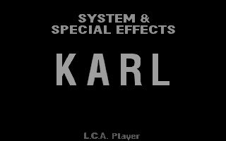
Part 3: 3D scenes by the numbers
All meshes are plain triangle lists: the object format stores three vertex indices per face, there are no quads, so nothing is split. Counts below come in two kinds, and they are labelled as such.
- Static: parsed from the actual resources with the port's
parseObject(vertices, faces, and for morph objects the number of extra key frames). Always before culling. - Measured: an instrumented headless run of the JS port (
Lib3D.drawObjectand the cull stage wrapped with counters, every frame of the part executed). “Rasterized” means the triangle passed the backface test (screen-space winding) and the depth limits and was handed to a span filler. It does not subtract triangles that are partly or fully off-screen (the filler rejects those itself). The port is pixel-exact against the original on all sampled frames, but these numbers were not taken from the original code itself.
| Scene (mode) | Objects | Vertices / triangles per mesh (static) | Static total, before culling | Measured per frame |
|---|---|---|---|---|
| E2 Wasp (3, no sort) | 68 meshes | 18-180 / 24-336 (e.g. 34/64, 134/264, 180/336, 168/306) | 3012 v / 5595 tri | 42.6 objects drawn, 2040 v transformed, 3791 tri submitted, 1479 rasterized (277-2217); 911 frames |
| B Spiky ball (15) | 1 | 685 / 1366 | 685 v / 1366 tri | 685 v, 1366 submitted, 568 rasterized (468-690); 2346 frames |
| D Morphing head (15, morph) | 1 (+10 key frames) | 529 / 968 | 529 v / 968 tri | 529 v, 968 submitted, 898 rasterized (712-968); 2158 frames |
| F Morphing env, ball (3, morph) | 1 (+3 key frames) | 650 / 1296 | 650 v / 1296 tri | 650 v, 1296 submitted, 531 rasterized (0-785); 1805 frames |
| F Morphing env, start-up sprites (3) | 16 x 64 frames | 158 / 316 | 1024 draws = 161,792 v / 323,584 tri | measured once at init: 92,634 rasterized (about 90 per sphere draw); not repeated per frame |
| I Torus mirror, torso (2) | 1 | 192 / 384 | 192 v / 384 tri | drawn 0.7x per frame, about 125 rasterized per frame averaged over all frames (about 179 per draw) |
| I Torus mirror, ribbon (20, 21 for the mirror) | 1 | 242 / 459 (329 warp type, 130 2-attr type, from the notes) | 242 v / 459 tri | drawn 1.7x per frame, about 359 rasterized per frame (about 211 per draw) |
| I Torus mirror, total | 2 | 434 v / 843 tri | 2.4 draws, 546 v, 1049 submitted, 484 rasterized (188-653); 2448 frames |
Not in the table: the head of part J is a pre-shaded pixel stream (no polygon data), and the intro, E1, part C, the voxel terrain and the text and blur effects do not use the 3D library at all. Triangle counts of the original per scene are therefore small by modern standards: a frame never rasterizes more than about 2200 triangles (E2 peak) and typically 500 to 900, each filled by hand-written assembly at 70 Hz. Part F's morph ball takes 3 key frames, part D's head 10, and the per-vertex interpolation of the morph does not change the triangle count.
Two caveats. The E2 value of 42.6 objects counts the bounding-sphere survivors (an object is skipped before transformation if its projected sphere is off screen or outside the depth range), so about 25 of 68 objects are skipped on an average frame. And the part D figure (93% of triangles pass) is what the port computes; the original was compared pixel by pixel, so the original does the same, but I did not investigate why so few triangles are culled there.
Part 4: The 3D engine in depth
The library is one block at 0x78000-0x7a210 plus a family of polygon fillers at 0x4d2xx-0x54xxx. It was written for one purpose: environment-mapped, bump-mapped objects at 70 Hz without a floating point unit, a z-buffer or a division per pixel. Everything below is verified against the port (lib3d.js, bit-exact on the sampled frames and on 400 random triangles per filler) and, for the snippets, against a fresh disassembly of image32.bin. Where I only know something from the notes, or inferred it, it says so.
Pipeline of one frame
- Frame start (0x78905 “flip”). Copies back-buffer rows 1..197 to VRAM and, in the same pass, refills the back buffer from a background image (resource 19, 27, ...). So the background copy doubles as the screen clear;
0x78948is the same with a constant colour. Rows 0, 198 and 199 are never touched (the demo is letterboxed). - Scene (0x79483). The camera matrix is built from three 12-bit angles. For each object: its position minus the camera, rotated; projected centre and radius (the radius is the longest vertex vector, computed at load); objects whose sphere is off screen or outside the depth range are dropped. Survivors get a depth key (
Z>>10, low 16 bits) and are sorted far to near by the same quicksort used for faces, then drawn one after another. This is the painter's algorithm at object level. - Draw one object (0x789c4). A mode number indexes a table at
0x784d1of 21-byte rows holding five function pointers, called in order: transform, light, cull, per-vertex setup, raster. Modes used by the demo: 2, 3, 15, 20, 21 (22 further rows are never selected). The first three stages are shared, only stage 4 and 5 differ. - Stage 1, transform + projection (0x78a35 / 0x79b16). Object matrix times camera matrix gives one 3x3 matrix plus translation, all in .10 fixed point. Every vertex gets
X'=x*M0+y*M4+z*M8+M12(and Y', Z'), kept at full precision for the depth key, then projected:e = (dist - (Z'>>10)) << shift,sx = 0xa0 + X'/e,sy = 0x64 + Y'/e, oneidivper axis per vertex. Ife <= 0(vertex at or behind the camera plane) there is no divide and it falls back toX'>>10, a deliberately dumb guard that produces garbage coordinates which the depth limits of stage 3 then reject.dist(0x14 to 0x12c depending on the part) andshift(1 or 3) act as focal length. - Stage 2, lighting (0x78a15). Not a lighting model: the vertex normals (16 B per vertex: x, y, z, then nx, ny, nz with 256 = 1.0) are rotated by a second matrix that uses the object angles plus a global angle triple
rot(no camera, no translation). The rotated normal later selects a pixel of the environment map. Changingrotmoves the highlights over the object without moving the object, which is how parts B and E2 make the light travel. (A face-normal variant,0x789f5, exists; the modes the demo uses take vertex normals.) - Stage 3, cull + depth key + face sort (0x78b08). For each face: the three projected points give a signed area
(x2-x1)*(y3-y1)-(x3-x1)*(y2-y1); zero or negative = back-facing, skipped. The depth is the weighted mean of the three view-space Z values,((z1+z2)/2+z3)/2(twosar), also tested against a near limit-(dist<<10)and a far limit0xfaa2b580. Surviving faces go into a list of dwords(face_index<<16)|key16wherekey16 = (z<<6)>>16; the list is sorted by the low word only (signed 16-bit compare), farthest first.flags&1turns the sort off (E2: the objects are tiny and flat, order does not matter visibly). There is no clipping of triangles against the screen at this stage, only the span fillers clip. - Stage 4, per-vertex setup. Turns each rotated normal into texture-like coordinates: mode 15 builds
u=(nx>>12)+0x80, v=(ny>>12)+0x80(a normal of length 256 times a .10 matrix is at most 218, so>>12leaves ±64, i.e. the sphere maps onto the central 128x128 disc of a 256x256 env map), shifted into the high half of a dword and combined with the vertex's own texture word (u|v<<8). Modes 3 and 2 build only the 16-bit env coordinates with shift 12 or 11 (radius 64 or 128 pixels). Mode 20 uses the mode 15 setup, then picks the filler per face. - Stage 5, rasterize. For each face in sorted order: gather its three screen points and attribute dwords and call the filler (below).
Triangle setup and scanline interpolation
All fillers share the same skeleton (I read 0x51593 in full for this; the others differ in the span kernel and clipping limits). The three vertices arrive packed as y<<16|x. The filler first counts how many of the three x values are below 320 using three cmp/adc (so negative x, which is huge unsigned, counts as outside): all three inside selects the unclipped row drawer (0x51da8), none inside rejects the triangle, anything in between selects the clipped row drawer (0x51a62). It stores the three points, sorts them by y with xchg, rejects triangles entirely below the last drawable row, and then computes three edge slopes with idiv (long edge top-to-bottom, and the two short edges): x slope as (dx<<16)/dy in 16.16, and each attribute slope with a 16-bit idiv of the difference. That is a handful of divisions per triangle and none per pixel. Triangles of height 1 reuse the previous triangle's slope variables (the port keeps this quirk, since it changes pixels). The row drawers compare against rows 1 and 198 explicitly, which is why rows 0, 198 and 199 are never drawn.
The row loop keeps left and right x as 16.16 values in memory (0x4d190, 0x4d194) and advances them by the slope each row; the span length is the difference of the integer parts. Attributes at the span start are also interpolated along the edge and stepped along the span with one constant per triangle. All attributes are linear in screen space: this is affine mapping, no perspective correction. For environment lookups that does not show, because the interpolated quantity is a normal direction, not a surface position.
Per-pixel shading
- Mode 15 (0x51593): texture + bump + environment. Per pixel: fetch the texel
T[v,u]from a 256x256 texture (selectorgs), fetch a 16-bit word from the bump map at the same address (selectords), add the two bytes of that word to the interpolated environment coordinates, fetch the environment texelE[...](selectorfs) and add it to the texture texel. The result is an 8-bit sum used directly as a palette index, so the palettes of parts B and D are two-dimensional ramps. Because the bump map (resource 17) is stored pre-biased as(b-8)*2per byte, its words act as a small signed offset in the env map: a cheap bump effect (no normal perturbation, no dot product). Two pixels are produced per iteration and written withstosw; see the snippet below. - Mode 3 / 2 (0x4e710, flat environment). Just
E[v,u], with (u,v) interpolated per pixel from the vertex normals: the picture on screen is a pure “matcap” of the 256x256 env image. Interpolating the normal and looking it up per pixel behaves like Phong shading with a light defined by an image. Mode 3 uses shift 12 (radius 64) and E2 and part F; mode 2 uses shift 11 and is used for the stone torso in part I with a render target as env map. - Mode 20 (0x4f47c warp and 0x4ddbf). Chosen per face by its first word:
w0==1gives a two-attribute filler on the texturegs, otherwise a four-attribute “warp” filler, readingfs[ds16[v,2u]+d]: the ribbon of part I is distorted through the bump map instead of being just shaded. I verified only that the port matches the original on random triangles; I have not read this kernel line by line. - Mode 21 (0x54548 and 0x52e96). The same warp and 2-attribute fillers retargeted to a 256-pixel-wide surface (
L.tgt): the mirror image of the ribbon is drawn into a 256x256 buffer which part I then uses as the env map of the torso. The warp variant mismatches the original on 2/400 random triangles that extend below row 205, which never occurs on screen.
Fixed-point formats
- Matrices:
.10(1.0 = 1024). Entries come from the sine table bymakeMatrix(a,b,c)andmulMatrix; angles are integers modulo 4096. - World positions: integer units, shifted left by 10 when made camera-relative, so that
pos*Mkeeps .10. - Vertex coordinates: int16. Vertex normals: int16, 256 = 1.0. Texture attribute: two bytes
u|v<<8. - Screen coordinates: int16, origin at the screen centre
(0xa0, 0x64)added after the divide. - Edge x: 16.16. Attributes: 8.8 per pair of coordinates, packed as 4 x 8.8 values in two dwords (see the snippet: one 32-bit
addsteps two interpolants at once; the integer byte of each is read throughdh/ch). A carry out of one packed lane would leak into the next; the notes list the 16-bit carries of the row increments among the quirks the port keeps. - Palette: 6-bit VGA DAC values, faded by scaling.
Tables
- Sine table: 4096 int16 entries, amplitude 1023, static data at
0x5599c(the code that builds it at0x79da0is never called). Cosine is the same table shifted by a quarter circle (SIN[a]=1023*cos(2*pi*a/4096),sin(a)=SIN[(a-0x400)&0xfff]). Other effects use two separate 32-bit tables of amplitude 65528 at0xa740/0xb740. - Square-root table (0x7871c): 65536 bytes where the value
nis repeated2n+1times, sotable[i]isfloor(sqrt(i))for anyi<65536.0x79cbfuses it for the approximate square root, and the radial env map generator (0x7873a) uses it to get the radius of each of the 256x256 pixels fromdx*dx+dy*dy: nofsqrt, no loop. - Env map (0x7873a): a 256x256 radial image, value =
ramp[radius](a 128-byte ramp from the part), quantised by a parameter (0/2/3/4) with optional dithering. E2 and part F instead load a ready-made 256x256 picture. - Morph weight table (0x79841): 128 words;
0x78fda/0x78ffeinterpolate vertex positions and normals between key frames. The port has this code, but it is covered only by the verification of parts D and F, not by the random-triangle tests.
The shared buffer quirk
The sqrt table is built into the back buffer (0x682d0, 64 KB), and the env map generator then reads from it. The back buffer is overwritten by the first flip. So the square root is only usable between initialisation and the first frame, which is why part D (and the library, per the notes) rebuilds the table right before an object is created. The port deliberately keeps this: sqrt() after the first flip returns garbage there too. A similar sharing exists in part D, where the texture and the bump map are the same 256x256 block (the gs and ds selectors point at the same memory).
Memory layout: selectors and 64 KB segments
The demo runs 32-bit flat under PMODE, but the fillers deliberately use segment registers: before the span loop, fs, gs, ds and es are loaded from variables holding selectors of 64 KB buffers: [0x55912] texture (gs), [0x558dc] bump map (ds), [0x55918] env map (fs), es the destination (back buffer or VRAM). Each map is exactly 256x256 bytes, so a 16-bit register addresses a whole texture, bh is the row, bl the column, and wrapping around 64 KB (or around 256 columns) is free: coordinates never need a clamp or modulo, a texture simply tiles. The selectors are allocated dynamically (the emulation harness needs a dynamic GDT for exactly this reason). Texture data therefore lives in separate 64 KB blocks, not in one flat array.
Performance tricks (as far as I can see in the asm)
- Self-modifying code. The transform routine (0x79b16) writes the matrix coefficients, vertex array addresses and even the projection shift directly into the immediates of
imul,add,shland the displacement ofmovsxin the loop that follows. The span fillers do the same with per-triangle gradients (add edx, 0x10001000is a placeholder in the dumped image, the real value is written before each triangle) and the row drawers with the edge slopes. No register or memory operand is spent on constants. - Two pixels or four pixels per iteration. Aligned
stosw/stosdinstead of byte writes; an odd leading and trailing pixel are handled separately, as the code at0x51f46and0x51fe1shows. - Several interpolants per register (packed 8.8 pairs in
edxandecx, swapped withrol 16). - No per-pixel divides (affine mapping) and few per triangle.
- No z-buffer. Two sorts (objects, faces), painter's algorithm. Sorting a face list costs far less than a Z test per pixel at this resolution.
- Backface culling before any setup, and a whole-object reject by bounding sphere in
render(). - Flip doubles as clear (background copy).
- Sort is optional (
flags&1) when drawing order is irrelevant.
Annotated inner loops: the 3D engine
All listings are real instructions from re/image32.bin, disassembled with Capstone (re/ref/d.py); the left column is the address. Comments are mine. IMM marks an operand that the code patches at run time (the image holds a placeholder).
Vertex transform and projection (0x79be9-0x79ca2)
079be9 movsx eax, word [edi*4 + IMM] ; x of vertex i (edi = 4*i, so 16 B per vertex; IMM patched per object)
079bf1 movsx ebx, word [edi*4 + IMM] ; y
079bf9 movsx ecx, word [edi*4 + IMM] ; z
079c01 imul edx, eax, IMM ; x * M[0] (matrix entry patched in)
079c07 imul ebp, ebx, IMM ; y * M[4]
079c0d add edx, IMM ; + translation M[12]
079c13 imul esi, ecx, IMM ; z * M[8]
079c19 add edx, ebp
079c1b add edx, esi ; edx = X' (.10)
079c1d push edx
079c1e mov [edi*4 + IMM], edx ; keep X' in the 3D vertex array
... ; the same 9 instructions for Y' (079c25) and Z' (079c49)
079c6e mov ebp, edx ; edx = Z'
079c70 sar ebp, 0xa
079c73 neg ebp
079c75 add ebp, [0x57ab6] ; ebp = dist - (Z' >> 10)
079c7b shl ebp, IMM ; IMM = [0x5594c] (1 or 3)
079c7e cmp ebp, 0
079c81 jg 0x79c8d ; in front of the camera: divide
079c8d mov eax, ecx ; ecx = X'
079c8f cdq
079c90 idiv ebp
079c92 add ax, 0xa0 ; screen x
079c96 mov cx, ax
... ; same for Y' (079c99-079c9e) with + 0x64
079ca2 mov [edi + IMM], ecx ; store sx
079ca8 mov [edi + IMM], ax ; store sy at +2 (overwrites the high half)One vertex = three imul triples and two idivs. The loop body is written by 0x79b16 (see the long run of stores at its start) every time an object is drawn; that is the self-modifying part. JS: X=x*M0+y*M4+z*M8+M12; e=(dist-(Z>>10))<<shift; sx=idiv(X,e)+0xa0 (Lib3D.project).
Face sort: the quicksort at 0x7898d
07898d cmp ecx, ebx ; ebx = first, ecx = last element (byte addresses)
07898f jle 0x789c3 ; nothing to sort
078991 mov edi, ebx ; edi = pivot slot
078993 lea esi, [ebx + 4] ; esi = scan pointer
078996 mov edx, [edi] ; edx = pivot (key in the low word)
078998 mov eax, [esi]
07899a cmp dx, ax ; signed 16-bit compare of the keys only
07899d jle 0x789a6 ; pivot <= element: leave
07899f stosd ; [edi] = element, edi += 4
0789a0 mov eax, [edi] ; displaced entry just after the old pivot slot
0789a2 mov [esi], eax ; goes to the scan slot
0789a4 mov [edi], edx ; pivot moves up one slot
0789a6 add si, 4
0789aa cmp esi, ecx
0789ac jbe 0x78998 ; scan to the end
0789ae push cx
0789b0 push di
0789b2 mov ecx, edi ; sort [first .. pivot] recursively
0789b4 call 0x7898d
0789b9 pop bx
0789bb pop cx
0789bd add bx, 4 ; then [pivot+4 .. last]: tail call
0789c1 jmp 0x7898dNot a textbook quicksort: the pivot is always the first element and it is dragged upward through the array as smaller keys are found. The order of equal keys therefore depends on the exact algorithm, and since coplanar faces tie often, the port copies it literally (sortList): a “correct” sort would draw tied triangles in another order and the output would differ by a few pixels. Smaller key = farther, so the list ends up far to near. JS: sortList(list, 0, (n-1)*4).
Mode 15 span: texture + bump + env (0x51f89-0x51fdd)
; edx, ecx: two 16-bit lanes each. Low lane = texture (v, u), high lane = env (v, u),
; integer part in dh / ch, fraction in dl / cl. ds = bump map, gs = texture, fs = env map.
051f89 mov bh, dh ; ---- pixel 0 ----
051f8b mov bl, ch ; bx = texture coordinate (v,u)
051f8d rol edx, 0x10 ; swap lanes: env coordinates now in dh/ch
051f90 rol ecx, 0x10
051f93 mov al, gs:[bx] ; texel
051f97 mov bx, [bx] ; 16-bit bump word at the same offset (ds)
051f9b add bh, dh ; + env v
051f9d add bl, ch ; + env u
051f9f add edx, STEP1 ; step both lanes (value patched per triangle)
051fa5 add al, fs:[bx] ; + env texel -> pixel 0
051fa9 add ecx, STEP2
051faf mov bh, dh ; ---- pixel 1 (env first, texture second) ----
051fb1 mov bl, ch
051fb3 rol edx, 0x10
051fb6 mov bp, bx ; bp = env coordinate
051fb9 rol ecx, 0x10
051fbc mov bh, dh
051fbe mov bl, ch ; bx = texture coordinate
051fc0 add edx, STEP1
051fc6 mov ah, gs:[bx] ; texel
051fca add bp, [bx] ; + bump word
051fce add ah, fs:[bp] ; + env texel -> pixel 1
051fd3 add ecx, STEP2
051fd9 dec si ; si = pixel pairs left
051fdb stosw ; write both pixels (es:[edi])
051fdd jne 0x51f89Per pixel: three memory reads (texture, bump, env), two byte additions and no multiply. The bump word is a free displacement of the env lookup; being read at an arbitrary byte offset, its low byte comes from this bump pixel and its high byte from the next one, and the map is stored pre-biased so that both act as signed offsets. I read the lane layout from this code and the unit tests (400/400 random triangles identical); the point where rol swaps lanes is the one part I only checked by test, not by tracing every register. JS: out[i] = gs[tuv] + fs[(ds16[tuv] + euv) & 0xffff] (tri4).
Mode 3 span: flat environment (0x4ecc4-0x4ecef)
; esi: bits 8-15 of si = env v (fraction in the low byte); ecx: bits 8-15 of cx = env u
; fs = env map (256x256); edx: dl = pixel pairs left; ebp = per-pixel step of u
04ecc4 ror dx, 1 ; dx = pixel count: split into pairs (dl) and odd bit (dh)
04ecc7 test dl, dl
04ecc9 je 0x4ecef ; no pairs
04eccb mov ebx, esi ; (the upper half of esi is 0)
04eccd mov bl, ch ; ebx = v<<8 | u
04eccf mov al, fs:[ebx] ; env texel, pixel 0
04ecd2 add si, 0x1111 ; v += dv (0x1111 = placeholder, patched per triangle)
04ecd7 add ecx, ebp ; u += du
04ecd9 mov ebx, esi
04ecdb mov bl, ch
04ecdd add si, 0x1111
04ece2 mov ah, fs:[ebx] ; env texel, pixel 1
04ece5 add ecx, ebp
04ece7 stosw ; write 2 pixels
04ece9 dec dl
04eceb mov ebx, esi
04eced jne 0x4eccdThis is the whole inner loop of the flat-shaded environment mode: the entire shading model is one table read per pixel. The loop exits with the odd pixel (test dh,dh at 0x4ecef). JS: out[i] = fs[(v<<8)|u] (tri2).
Part 5: Inner loops of the other effects
Resource decompressor (0x4ad47)
; esi = packed stream (after the 17-byte header), edi = output, ebx = -1 on entry
; bp = current 16-bit flag word, dl = flag bits left
04ad5f shr bp, 1 ; next flag bit into CF
04ad62 dec dl ; dec does not touch CF
04ad64 jne 0x4ad6e
04ad66 mov dl, 0x10 ; word exhausted: reload (mov and lea keep CF)
04ad68 mov bp, [esi]
04ad6b lea esi, [esi + 2]
04ad6e jae 0x4ad73 ; CF = 0: back-reference
04ad70 movsb ; CF = 1: literal byte, copy it
04ad71 jmp 0x4ad5f
04ad73 ... ; (04ad73-04ad81: the same shr/dec/reload for a second bit)
04ad82 lodsb ; al = low byte of the distance
04ad83 mov bh, 0xff
04ad85 mov bl, al ; ebx = 0xffffff00 | al : a negative distance
04ad87 jb 0x4addd ; second bit 1: longer match (variable length decoding)
...
04add2 mov cl, 2 ; short match: length 2
04add4 push esi
04add5 lea esi, [edi + ebx] ; source = output pointer + negative distance
04add8 rep movsb ; copy (overlap gives run-length repetition)
04adda pop esi
04addb jmp 0x4ad5fIt is LZ77 with a bit-stream of control flags. The decoder is clever about the flag refill: dec, mov and lea do not alter the carry flag, so the carry from the shr survives the optional reload and a single jae tests it. Longer matches read more flag bits (the code at 0x4addd and after; see re/dlz.py for the full bit grammar: one literal bit, then distance bits, and length 2 to about 272). In the short-match branch a distance byte of 0xff is followed by one more flag bit: 1 continues, 0 ends the stream. JS/Python: dlz() in re/dlz.py, i.e. out.append(rd()) for a literal, else for _ in range(n): out.append(out[-d]).
Zoom blur of the text effects (generator 0x13922, driver 0x13579)
This code is written by the program at start-up. The generator loops 80 times (one per group of 4 destination pixels), reading the column table at 0x12814 (x' = ((x-160)*0x78+0x40 >> 7)+160) and emitting these bytes (decoded here, they are not in the image as such):
; emitted at 0x139a7..0x139ff by the generator, one copy per 4 pixels (k = 0, 4, .. 316):
mov eax, [esi + x'-1] ; 8b 86 d32 dword one pixel to the left (unaligned)
mov ebp, [esi + x'+1] ; 8b ae d32 one pixel to the right
add eax, ebp
mov ebp, [esi + x'-0x140] ; row above
add eax, ebp
mov ebp, [esi + x'+0x140] ; row below
add eax, ebp
shr eax, 2 ; c1 e8 02 average of the 4 neighbours
and eax, edx ; 23 c2 edx = 0x1f1f1f1f: drop stray bits
mov [ebx + k], eax ; 89 83 d32 write to VRAM ...
stosd ; ab ... and to the next feedback buffer
; driver 0x13579 (once per frame):
013594 imul esi, [ecx*4 + 0x12d14], 0x140 ; row table: source row = ((y-100)*0x78 >> 7)+100, times 320
01359f add esi, [0x13038] ; + source buffer
0135a5 call [0x13040] ; run the generated code for this row
0135ab add ebx, 0x140 ; next VRAM row
0135b1 dec ecx
0135b2 jns 0x13594 ; ecx = 199 .. 0
0135b4 mov eax, [0x13038] ; swap source and destination buffers
0135b9 xchg [0x1303c], eax ; ...and store it in the other slotEvery destination dword (4 pixels, byte values 0..31) is the sum of 4 unaligned dword reads. Since each byte sum is at most 4*31 = 124 there is no carry between bytes; the shr 2 pushes the low two bits of each byte into the top of the byte below, and the mask 0x1f1f1f1f removes them again. That is four blurred pixels for 11 instructions with every address a constant, and the zoom (a 120/128 sampling grid) comes for free from the two tables. Rows are done from the bottom (ecx 199 to 0). JS: out[y][x] = (A[sy][sx-1]+A[sy][sx+1]+A[sy-1][sx]+A[sy+1][sx]) >> 2 & 31 (web/parts/textg.js); part H uses the same trick with factor 0x77 and a wave offset.
Voxel terrain: one ray (0x12c0-0x1309)
; es = height map, gs = colour map, fs = LUT[step][height] (screen height); edx = map address (dh = y, dl = x)
; ch = highest screen row already filled on this ray; bh = step counter (distance), edi = output column
0012c0 mov bl, es:[edx] ; terrain height at this map position
0012c3 mov cl, fs:[bx] ; bx = step<<8 | height -> projected screen height
0012c7 cmp cl, ch
0012c9 jbe 0x12f9 ; hidden behind earlier terrain: skip
0012cb sub cl, ch ; cl = number of new pixels in this column
0012cd mov al, gs:[edx] ; colour of the terrain here
0012d0 add ch, cl ; new top
0012d2 shr cl, 1
0012d4 jae 0x12dd
0012d6 mov [edi], al ; odd bit: 1 pixel
0012d8 lea edi, [edi + 1]
0012db je 0x12f9
0012dd mov ah, al
0012df shr cl, 1
0012e1 jae 0x12eb
0012e3 mov [edi], ax ; next bit: 2 pixels
0012e6 lea edi, [edi + 2]
0012e9 je 0x12f9
0012eb push ax ; build eax = 4 copies of the colour
0012ed push ax
0012ef pop eax
0012f0 mov [edi], eax ; the rest: 4 pixels per iteration
0012f2 add edi, 4
0012f5 dec cl
0012f6 jne 0x12f0
0012f9 add bh, 2 ; next step along the ray
0012fc add dx, [ebp*2 + 0xcc6] ; walk the map: 16-bit step (dy*256+dx) from the ray table
001305 inc ebp
001306 cmp bh, 0xd2
001309 jb 0x12c0 ; 105 stepsA classic voxel ray caster, but the buffer is rotated: the 256 rays are the columns of a 256x256 buffer, so a ray's pixels are consecutive bytes and vertical fills become movs of 1, 2 or 4 bytes chosen from the bits of the fill length. Occlusion is a single compare with the running top ch (no z-buffer: the ray goes near to far). The map address is dx, a 16-bit register, so the 256x256 maps wrap for free, and one table of precomputed 16-bit steps moves the ray without any multiply. JS: for(j=0;j<105;j++){c=LUT[j*256+H[a]]; if(c>top){fill(top..c,C[a]); top=c} a=(a+T[j])&0xffff} (web/parts/terrain.js).
E1 tunnel, 4 pixels per iteration (0x12662-0x1269b)
; ebp = lookup table (one 16-bit entry per screen pixel, built at init), edi (after xchg) = scroll offset of layer 2
; gs = texture 1 (bytes), fs = texture 2 (16-bit read), si = scroll offset of layer 1, edx = VRAM pointer
012662 mov ebx, [ebp + 4] ; two table entries for pixels 2 and 3
012665 mov al, gs:[bx + si] ; pixel 2: texture 1 at (entry + scroll)
012669 shr ebx, 0x10
01266c mov ah, gs:[bx + si] ; pixel 3: same with the second entry
012670 and bl, 0xfe ; word-align for layer 2
012673 add ax, fs:[bx + di] ; add texture 2 (one 16-bit read feeds both pixels)
012678 shl eax, 0x10 ; park pixels 2,3 in the high half
01267b mov ebx, [ebp] ; entries for pixels 0 and 1
01267e mov al, gs:[bx + si]
012682 shr ebx, 0x10
012685 add ebp, 8 ; 4 table entries consumed
012688 mov ah, gs:[bx + si]
01268c and bl, 0xfe
01268f add ax, fs:[bx + di]
012694 mov [edx], eax ; 4 pixels at once
012696 add edx, 4
012699 dec cx
01269b jne 0x12662 ; cx = 0x3d90 = 15760 iterations = 63040 pixels (rows 1..197)All the geometry of the tunnel was moved into one precomputed table (the walk over concentric ellipses at start-up), so per frame each pixel costs two table-indexed reads of tiny textures and an add; scrolling is just si and di, which are 16-bit and wrap on 256x256 textures. One 16-bit add handles two pixels, so the carry from the low byte can leak into the high byte; the port reproduces the leak (“16-bit add with carry” in the notes). JS: out[i] = (T1[(tbl[i]+s1)&0xffff] + T2[((tbl[i]&~1)+s2)&0xffff]) & 255 with the pair caveat above (web/parts/e1.js).
Sources: re/NOTES.md and re/parts/*.md in the project repository contain the per-part details (addresses, tables, constants).